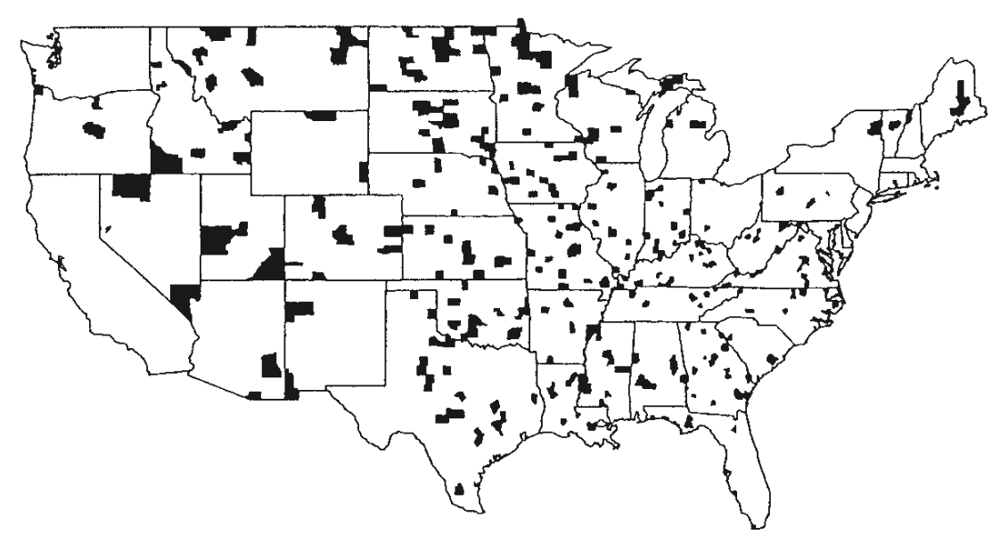

Welcome!
Welcome to the course!
Important course information
Professor Becky Tang
- Office: Warner 214
- Email: btang@middlebury.edu
Course website: https://midd-stat201-fall2024.github.io/
- Please bookmark this page and visit frequently!
- Note that both sections will use the same website
What is this course about?
What is statistics? What is data science?
By the end of this course, you will:
- Produce and interpret graphical displays and numerical summaries of data
- Have developed confidence and some proficiency in coding in
R(and in particular, the tidyverse syntax) - Better understand the central role of randomness in designing studies and making conclusions
- Hopefully want to pursue another Statistics or Mathematics course!
- And much more…
Necessary background
We assume ZERO background in statistics and data science
There is a large computing component, though not as much as in STAT 118
MATH 121 (Calculus 1) pre-req
Recommendations
Takes notes! Each day’s slides will be made available on the course website by 10pm the night before. I recommend either:
Printing out the PDF version of slides to write notes on during class
- I recommend 4 or 6 slides per page (demo)
Downloading PDF of slides to iPad/tablet/laptop and write notes on then using device
Taking supplemental notes on paper/device
Re–visit notes within 24 hours of class
Recommendations (cont.)
We will frequently make use of our laptops. Please bring one with enough charge to last the entire class each day we meet!
- Please let me know as soon as possible if you do not have access to a laptop
Try to resist the temptation to do other tasks (e.g. check email, online shop, watch shows) when your laptop is open
- This can be distracting to those around you
Keep an open mind and don’t be afraid to ask for assistance or tell me to slow down!
Resist the temptation of using ChatGPT or other generative AI tools
Example
Counties of the U.S. within the bottom 10% of death rates for kidney cancer for white males, 1980-1989.

What do you notice? What might be the explanation?
Example (cont.)
Counties of the U.S. within the top 10% of death rates for kidney cancer for white males, 1980-1989.

Example (cont.)
What’s going on? Let’s do some digging…
Death rate for kidney cancer: https://seer.cancer.gov/statfacts/html/kidrp.html
County sizes: https://en.wikipedia.org/wiki/County_statistics_of_the_United_States